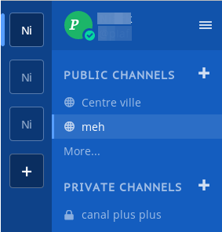
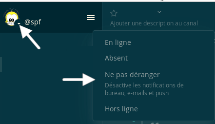

Identification #
Vous pouvez vous identifier à partir de l’adresse web https://discuter.pcet.link/.
Mes identifiants #
Vous pouvez vous identifier avec le nom d’utilisateur·trice ou l’adresse de courriel utilisée pour la création du compte.
Si vous avez oublié votre mot de passe, vous pouvez le réinitialiser en cliquant sur l’onglet J’ai oublié mon mot de passe sur la page d’identification, ou en contactant votre administrateur·trice système pour obtenir de l’aide afin de réinitialiser votre mot de passe.
Changer d’équipe #
Vous pouvez passer d’une équipe à l’autre en utilisant la barre latérale d’équipe qui apparaît à gauche de votre liste de chaînes sur la barre latérale de gauche.

Changer de statut #
Vous pouvez définir manuellement un statut de connexion entre En ligne, Absent, Ne pas déranger et Hors ligne.
Pour changer ce statut vous devez cliquer sur l’icône à côté de votre photo de profil puis cliquer sur le statut souhaité.
Par exemple, pour mettre Ne pas déranger :

Comment Discuter détermine votre statut #
| CLIENT | EN LIGNE | ABSENT | HORS LIGNE |
|---|---|---|---|
| Sur navigateur | vous êtes sur l’onglet Discuter | vous êtes inactif sur l’onglet Discuter depuis 5 minutes | vous avez fermé l’onglet Discuter |
| Sur l’application mobile | l’application est active | vous êtes inatif depuis 5 minutes mais l’application est ouverte | vous avez changé d’application, fermé l’application ou verrouillé votre écran |
| Logiciel PC | vous êtes actif sur votre PC | vous êtes inactif sur votre PC depuis 5 minutes | vous avez fermé le logiciel, ou fermé ou mis en veille votre PC |
Se déconnecter #
Pour vous déconnecter vous devez :
- cliquer sur en haut, à gauche, à côté de votre pseudo
- cliquer sur Se déconnecter dans le menu
Vous serez alors déconnecté de toutes les équipes où vous étiez identifié et ouvertes dans votre navigateur.